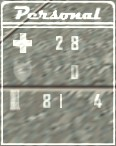

|
|
MANUEL SCIENCE AND INDUSTRY Traduit par Chuky |


- Introduction
- Bases
- Avancé
- Interface
- Conseils sur le gameplay
Un guide plus avancé est également disponible:
Science and Industry est une modification pour Half-Life qui donne aux joueurs le rôle d'agents de sécurité pour l'une des deux corporations concurrentes de recherche high tech. Chacune de ces corporations débute avec trois scientifiques, dont la recherche va dans l'amélioration des équipement de votre companie et se traduit directement par une augmentation de vos revenus. L'efficacité de vos scientifiques dépend du temps qu'ils passent à travailler... donc votre travail est évidemment de les protéger des raids enemis, et aussi d'aller attaquer l'enemi pour ralentir leur production. Mieux, vous pouvez capturer des scientifiques ennemis et les ramener dans votre labo pour y asseoir votre position dominante ! Tout ce que vous avez à faire c'est de courir jusqu'au labo ennemi et de frapper un de leurs scientifiques à la tête avec votre attaché-case... L'astuce est d'arriver à rentrer à la base et d'apporter aux ressources humaines votre nouvelle "recrue"...
Là où ça se complique c'est que les deux corporations débutent avec une technologie très faible... votre équipe doît donc choisir quelles technologies rechercher pour gagner des parts de marché ! Développer la technique de vos armes vous rendra peut-être plus efficace à la bataille, mais vous passerez un moment difficile à sortir de la base ennemie avec un scientifique sans armure ou implants bioniques. Certaines technologies affectent aussi la productivité de vos scientifiques... vous permettant de gagner un petit avantage pécuniaire dans une partie sérrée ! Tout cela peut être à vous... mais seulement si vous signez tout de suite comme gardien de sécurité chez Midland Carbide Labs [MCL] ou Amalgamated Fluorodynamics [AFD].
Lire les sections suivantes pour plus d'informations.
 Si vous voulez être
un membre précieux pour votre corporation, vous devez commencer
par apprendre à naviguer dans votre base. Chaque map a une
disposition différente mais toutes ont des éléments
communs avec lesquels vous deviendrez vite familier. Suivez les
panneaux flêchés à travers votre base pour vous
rendre où vous voulez. Si vous n'êtes pas sûr
de la base dans laquelle vous êtes, regardez autour de vous
et cherchez les indices de couleur : bleu pour Midland Carbide Labs
(MCL), et vert pour Amalagamated Flurodynamics (AFD).
Si vous voulez être
un membre précieux pour votre corporation, vous devez commencer
par apprendre à naviguer dans votre base. Chaque map a une
disposition différente mais toutes ont des éléments
communs avec lesquels vous deviendrez vite familier. Suivez les
panneaux flêchés à travers votre base pour vous
rendre où vous voulez. Si vous n'êtes pas sûr
de la base dans laquelle vous êtes, regardez autour de vous
et cherchez les indices de couleur : bleu pour Midland Carbide Labs
(MCL), et vert pour Amalagamated Flurodynamics (AFD).
- Services de clonage - Les joueurs qui ont été tués pendant leur service sont clonés dans ces quartiers. Dans cette chambre vous trouverez santé et armure pour vous rafraichir. Si vous êtes bléssés au travail, retirez-vous ici pour vous soigner et vous reéquiper.
- Entrepôt des prototypes - Les armes et engins produits pour vous par votre corporation sont stockés ensembles dans la chambre d'entrepôt. Ici il y aura aussi bien des prototypes expérimentaux aux stades avancés que des boîtes de munitions et d'autre matériel utile. Dans la plupart des services, cette salle est accollée aux quartiers de clonage pour aider les employés à s'équiper rapidement après leur réapparition.
- Labo de recherche - Le laboratoire de recherche est le lieu où les scientifiques font leurs tours de magie. Protégez-le à tout prix.
- Resources humaines - Votre administrateur supervise les opérations depuis son bureau : les ressources humaines. Quand vous trouvez quelque chose dont la compagnie peut profiter (scientifique recruté, arme volée, etc.) apportez-le lui.
- Salle des ordinateurs - Certaines maps ont un mécanisme extensif qui donne du matériel supplémentaire à vos scientifiques. Defendez la zone de tous les apprentis saboteurs.
 En tant qu'agent de
sécurité, votre mission est avant tout
de garder le labo de votre corporation. Quand tout
va bien, les scientifiques doivent se déplacer dans les locaux,
tout en faisant des tas de calculs que vous ne pouvez pas comprendre.
Suivant la disposition de la map, le laboratoire peut être
une grande pièce ou plusieurs pièces plus petites.
Vos scientifiques se déplaceront librement dans la zone entière
du laboratoire. Si vous gardez vos scientifiques contents en maintenant
un niveau sonore assez bas, ils produiront plus de recherche (meilleures
armes, armure et technologies pour vous) et plus d'argent pour votre
équipe.
En tant qu'agent de
sécurité, votre mission est avant tout
de garder le labo de votre corporation. Quand tout
va bien, les scientifiques doivent se déplacer dans les locaux,
tout en faisant des tas de calculs que vous ne pouvez pas comprendre.
Suivant la disposition de la map, le laboratoire peut être
une grande pièce ou plusieurs pièces plus petites.
Vos scientifiques se déplaceront librement dans la zone entière
du laboratoire. Si vous gardez vos scientifiques contents en maintenant
un niveau sonore assez bas, ils produiront plus de recherche (meilleures
armes, armure et technologies pour vous) et plus d'argent pour votre
équipe.
Les scientifiques de la corporation trouveront TRES dûr de travailler s'il y a beaucoup de bruit dans le labo, donc une partie de votre travail en tant qu'agent de sécurité consistera à garder vos labos silencieux. Vous pouvez garder vos locaux silencieux en évitant que les armes fassent feu dans la zone. Rien ne dérange plus qu'un tir de roquette près de vos expériences, et ça s'applique aussi bien à vos armes qu'à celles des agents rivaux.
Si vous échouez et que le bruit se répand dans votre labo, vous allez vous rendre compte que l'efficacité de vos scientifiques chutera très vite. Vous pouvez voir où les scientifiques en sont de leur efficacité en regardant le petit atome en bas à droite du HUD. Si tout va bien, l'atome sera complètement blanc, s'ils sont dérangés, l'atome sera seulement partiellement blanc, le reste gris. Plus il est gris, moins vos scientifiques sont efficaces et s'ils sont moins efficaces, ils produiront moins d'argent et moins de recherche.
Vos scientifiques peuvent seulement être tués par vos opposants (ils ne peuvent pas, de toute façon, être tués par votre équipe - les attaquer va juste les dissiper et les rendre moins efficaces). On pourraît penser que c'est un bon moyen d'atteindre la corporation rivale, puisqu'ils doivent payer l'embauche d'un nouveau scientifique et que leur recherche est interrompue un instant. Pourtant, vos propres scientifiques n'aiment pas particulièrement qu'on fasse du mal à leurs collègues, même d'une compagnie rivale, et leur efficacité va chuter à chaque fois que vous tuerez un scientifique de la corporation opposée. Pire, si vous tuez un nombre excessif de scientifiques ennemis, vos scientifiques vont vous implanter une puce dans le crâne qui vous secouera à chaque fois que vous porterez la main sur un de leurs collègues. Vous pouvez aussi perdre des frags. Donc en général, tuer les scientifiques est une mauvaise idée. Par contre si vous n'avez plus un seul scientifique dans votre équipe, on peut considérer que la saison de la chasse est à nouveau ouverte.
Au début de chaque map, chaque équipe a un petit kit avec un peu d'argent à l'intérieur, 3 scientifiques, et quelques armes basiques (attaché-case et pistolet de defense). Après quelques secondes, les scientifiques de chaque équipe seront prêts à démarrer les recherches et un petit menu de vote s'affichera avec vos premiers axes. Chaque membre de l'équipe aura quelques secondes pour placer son vote, ensuite on procède au dépouillement et le prochain objectif sera établi.
S&I Arbre de Technologie (tableau complet)
 L'arborescence est
assez compliquée, dans un style similaire à celle
de la série des Civilization. Chaque nouvelle technologie
que vous voulez rechercher nécessite que vous possédiez
déjà l'ancienne avant de pouvoir commencer. Chaque
fois que vos scientifiques sont prêts à explorer un
nouvel axe, un menu va s'afficher vous proposant jusqu'à
six options, comme des nouvelles armes, une meilleure armure, ou
même des implants localisés pour rendre votre équipe
plus efficace au combat. S'il y a plus de six sujets dont vous avez
les conditions nécessaires, seulement les plus utiles généralement
vont s'afficher. Rappelez-vous que votre équipe commence
la partie sans armure, et vous n'aurez pas accès aux recharges
d'armure tant que vous n'avez pas recherché une technologie
d'armure.
L'arborescence est
assez compliquée, dans un style similaire à celle
de la série des Civilization. Chaque nouvelle technologie
que vous voulez rechercher nécessite que vous possédiez
déjà l'ancienne avant de pouvoir commencer. Chaque
fois que vos scientifiques sont prêts à explorer un
nouvel axe, un menu va s'afficher vous proposant jusqu'à
six options, comme des nouvelles armes, une meilleure armure, ou
même des implants localisés pour rendre votre équipe
plus efficace au combat. S'il y a plus de six sujets dont vous avez
les conditions nécessaires, seulement les plus utiles généralement
vont s'afficher. Rappelez-vous que votre équipe commence
la partie sans armure, et vous n'aurez pas accès aux recharges
d'armure tant que vous n'avez pas recherché une technologie
d'armure.
La vitesse à laquelle chaque objectif est découvert
dépend de combien de scientifiques l'équipe a, et
du silence du labo de recherche. Si une équipe recrute des
scientifiques de l'autre équipe, il est probable qu'elle
aura plusieurs niveaux de technologie d'avance sur l'opposition.
S'il vous arrive de mourir durant votre service, votre corporation va gracieusement vous ramener à la vie en utilisant la technique du clonage. Cette pratique coûte de l'argent (voir le tabeau suivant). Une corporation dont les agents passent le plus clair de leur temps à mourir n'aura plus beaucoup d'argent dans ses caisses. Sachez qu'il y a aussi un petit temps avant de réapparaître à cause du processus de clonage, il peut être réduit avec des options de recherche. Après avoir été cloné, vous serez protégé pendant quelques secondes, utilisez ce temps pour déloger les campeurs ennemis à l'extérieur de votre salle de clonage.
Une bonne façon d'augmenter la productivité de votre labo est de "recruter" des scientifiques chez la corporation rivale. Vous pouvez le faire en vous introduisant discrètement ou avec fracas dans le labo ennemi, en sortant votre attaché-case et en claquant la tête d'un scientifique. Malheureusement, les scientifiques vont reconnaître votre uniforme et paniquer et essayer de s'enfuir. En général ce n'est pas trop dûr de les attraper (du moment qu'il n'y a pas d'agent ennemi dans les parages), et vous pouvez le hisser sur vos épaules et le ramener en quatrième vitesse au département des ressources humaines de votre compagnie.
 Une fois que vous avez un scientifique, vous devez revenir
jusqu'à votre base et trouver l'administrateur. L'administrateur
(à gauche sur la photo) va "persuader" la ou le
scientifique qu'il ferait mieux de rejoindre votre compagnie, et
votre équipe récupère un chercheur de plus.
Si vous avez des problèmes pour trouver l'administrateur,
essayez de suivre les panneaux indiquant les "Ressources Humaines",
ils sont souvent placés pour vous aider à des endrois
en vue.
Une fois que vous avez un scientifique, vous devez revenir
jusqu'à votre base et trouver l'administrateur. L'administrateur
(à gauche sur la photo) va "persuader" la ou le
scientifique qu'il ferait mieux de rejoindre votre compagnie, et
votre équipe récupère un chercheur de plus.
Si vous avez des problèmes pour trouver l'administrateur,
essayez de suivre les panneaux indiquant les "Ressources Humaines",
ils sont souvent placés pour vous aider à des endrois
en vue.
Si vous êtes tués en portant un scientifique, il sera
déposé là où vous êtes mort et
retournera à son laboratoire dès qu'il aura repris
ses esprits. Avant qu'il le fasse, votre équipe a une chance
de le récupérer là où il est tombé
et de le ramener quand même à la base. Seule l'équipe
qui essayait de le subtiliser peut le ramasser, l'autre équipe
peut juste le protéger en attendant qu'il veuille bien revenir
à son laboratoire.
S'il vous arrive de tuer un opposant qui avait dans sa main une technologie que votre corporation n'avait pas encore recherchée, vous pouvez attraper cette arme ou engin et l'apporter à votre administrateur pour un bonus de recherche. Pour pouvoir lui prendre son arme, tenez vous prêt quand vous marchez sur lui. Chaque objet ramené avec succès réduit le temps qu'il faudrait normalement pour le rechercher. Cet effet est cumulable. De toute manière, il faudra quand même dire à vos scientifiques de finir ce sur quoi ils sont avant d'accéder à la dite technologie en votant pour elle.
Si votre compagnie est en avance du côté des armes, ou si elle a un accessoire que l'ennemi n'a pas, soyez prudents. Si vous allez au combat avec et que vous êtes tués, votre ennemy va probablement sauter sur l'occasion de supprimer votre avantage en vous dérobant votre technologie. Donc si vous êtes gravement blessé, essayez de ne pas la laisser tomber au combat.
 Beaucoup de complexes
high tech comptent sur un equipement extensif pour aider leur recherche.
Même si cet équipement peut faire économiser
beaucoup de temps et d'argent à la compagnie, ils restent
très vunérables aux saboteurs. Si vous pouvez vous
introduire chez vos concurrents, jetez un oeil aux ordinateurs,
équipements de clonage ou tout ce qui pourraît inverser
leurs opérations si c'était perdu.
Beaucoup de complexes
high tech comptent sur un equipement extensif pour aider leur recherche.
Même si cet équipement peut faire économiser
beaucoup de temps et d'argent à la compagnie, ils restent
très vunérables aux saboteurs. Si vous pouvez vous
introduire chez vos concurrents, jetez un oeil aux ordinateurs,
équipements de clonage ou tout ce qui pourraît inverser
leurs opérations si c'était perdu.
Pour savoir ce qui est important, lisez les notes concernant la
map dans son fichier readme. Il va s'afficher au moment de choisir
votre équipe au début de la partie. Lisez rapidement
les objectifs critiques et vous devriez savoir quoi chercher et
detruire.
Le meilleur moyen de détruire l'équipement ennemi est d'utiliser une arme de contact (votre attaché-case) ou des explosifs. Une fois que l'équipement est détruit, la compagnie va commencer d'engranger des ressources et du temps pour le réparer, et après un instant fixé il sera remplacé.
Certaines maps contiennent des ressources spéciales qui peuvent donner à votre compagnie une petite avance dans la compétition. Lisez le readme de la map au moment de la selection de l'équipe et vous devriez savoir ce qu'il existe comme ressources dans la map.
Toutes les ressources sont différentes et seront décrites dans le readme. Mais en général elles suivent un schéma simple dans laquel vous attrapez la ressource à un endroi (la base ennemie ou un terrain neutre) et vous la ramenez à votre administrateur aux Ressources Humaines. Dans beaucoup de cas, c'est similaire à rapporter un scientifique mais il peut y avoir beaucoup de choses différentes. Déjà, si vous mourrez avez un scientifique, un coéquipier a une chance de le récupérer avant qu'il se réveille. Avec une ressource, c'est perdu. Sinon certaines ressources ont un temps limité pour être rapportés et d'autres propriétés. Lisez en détail le readme de la map pour être sûr de savoir ce que vous allez chercher.
Science and Industry utilise des stats séparées pour évaluer les performances des joueurs et les performances des équipes. Le score d'une équipe est mesuré par la quantité d'argent amassé, alors que le niveau des joueurs est mesuré grâce à leurs frags. Des bonus de frags sont donnés dans de nombreuses situations, pour aider à équilibrer la défense et l'attaque. Le score actuel de l'équipe est toujours affiché dans l'angle en haut à droite de l'écran.
| Fonds de la corporation | |
| Taux de base des gains de la corporation: | $60 |
| Extra Produit par scientifique par sec. (à efficacité max): | $15 |
| Services de clonage | -$800 |
| Engager un nouveau scientifique | -$1,000 |
| Bonus pour le score personnel | |
| Tuer un agent rival | 1 |
| Tuer l'employé du mois ennemi | 2 |
| Tuer un agent rival près du labo (en dérangeant des scientifiques) | 2 |
| Tuer un agent rival près du labo (sans les déranger) | 3 |
| Défendre un recruteur (quelqu'un qui porte un scientifique) | 2 |
| Tuer un agent ennemi qui recrute un de vos scientifiques | 2 |
| Recruter avec succès un scientifique | 5 |
| Sauver une technologie pour la recherche | 2 |
| Detruire une technologie ennemie (ordis et autres) | varie |
| Capturer des resources | varie |

Tous les élément du HUD sont décrits ci-dessous:
Personnel
La partie en bas
à gauche du HUD vous informe sur vous-même. Elle contient
votre santé, niveau d'armure et la quantité de munitions.
Pour des raisons évidentes c'est ce qui doît être
regardé le plus souvent. La vie et l'armure peuvent être
rechargées grâce aux chargeurs de votre base, ou naturellement
avec la Biotechnologie Regénérative ou l'Armure Regénérative.
Vos munitions peuvent être remplies avec les caisses qu'on
trouve dans l'Entrepôt de Stockage de la base, ou avec des
Réplicateurs Personnels de Munitions. Notez que votre compagnie
débute sans aucune armure, cela doît être recherché.
Sinon les chargeurs d'armure vont être inactifs.
Recherche
 La partie en bas
à droite du HUD montre des informations sur la compagnie.
L'atome en haut à gauche du cadre représente l'efficacité
à laquelle votre équipe de recherche travaille. Si
l'atome est grisé, alors vos scientifiques ne travaillent
pas du tout. S'il est blanc, l'équipe de echerche est 100
% efficace. Si l'atome se change en un vert radioactif, c'est que
vos scientifiques travaillent dans des conditions anormales (sous
l'effet d'un réhausseur comme le mindray). Dans l'exemple
en photo, les scientifiques travaillent à
pleine capacité. Vous pouvez vérifier un par
un les scientifiques en plaçant votre viseur sur eux.
La partie en bas
à droite du HUD montre des informations sur la compagnie.
L'atome en haut à gauche du cadre représente l'efficacité
à laquelle votre équipe de recherche travaille. Si
l'atome est grisé, alors vos scientifiques ne travaillent
pas du tout. S'il est blanc, l'équipe de echerche est 100
% efficace. Si l'atome se change en un vert radioactif, c'est que
vos scientifiques travaillent dans des conditions anormales (sous
l'effet d'un réhausseur comme le mindray). Dans l'exemple
en photo, les scientifiques travaillent à
pleine capacité. Vous pouvez vérifier un par
un les scientifiques en plaçant votre viseur sur eux.
Le nombre à côté de l'atome note combien de scientifiques travaillent actuellement dans votre laboratoire. Si vous voyez que ce chiffre chute soudainement c'est qu'il est arrivé une de ces deux choses. Soit un de vos scientifiques vient d'être tué, dans ce cas vous feriez mieux de courir jusqu'au labo pour empêcher celui qui a fait ça de continuer, soit un de vos scientifiques se fait kidnapper par un joueur ennemi, et vous devriez l'intercepter avant qu'il revienne à son admnistrateur.
En dessous de l'atome il ya une petite îcone qui vous montre ce que les scientifiques sont en train de rechercher. A côté il y a la barre de progrès de cet objet particulier. La barre progresse en se remplissant vers la droite. Quand elle est complètement blanche, l'objet est fini et la recherche recommence avec un autre objet.
Indicateur d'argent
 En haut à droite
(ou en haut à gauche, ça depend de votre cvarhud_showTeamCash
) les chiffres montrent l'argent actuel que possèdent les
deux corporations. C'est plus rapide que d'avoir à passer
par le tableau des scores. En dessous des infos sur l'argent il
y a un compteur à rebours qui montre combien de temps il
reste avant la fin du match et que la victoire soit déclarée.
En haut à droite
(ou en haut à gauche, ça depend de votre cvarhud_showTeamCash
) les chiffres montrent l'argent actuel que possèdent les
deux corporations. C'est plus rapide que d'avoir à passer
par le tableau des scores. En dessous des infos sur l'argent il
y a un compteur à rebours qui montre combien de temps il
reste avant la fin du match et que la victoire soit déclarée.
Indicateurs de charge
 Si vous êtes
actuellement en train de porter un scientifique sur votre dos, c'est
indiqué avec une îcone au-dessus du cadre de la recherche.
Au dessus du dessin (un scientifique avec une ampoule sur la tête)
est écrit le nom du scientifique que vous êtes en
train de porter.
Si vous êtes
actuellement en train de porter un scientifique sur votre dos, c'est
indiqué avec une îcone au-dessus du cadre de la recherche.
Au dessus du dessin (un scientifique avec une ampoule sur la tête)
est écrit le nom du scientifique que vous êtes en
train de porter.
 Les ressources
sont notées de la même façon que les scientifiques,
même se elles sont portées différemment. Une îcone
représentant la ressource apparaît sur le HUD. Le nom
de la ressource est écrit au dessus de l'îcone.
Les ressources
sont notées de la même façon que les scientifiques,
même se elles sont portées différemment. Une îcone
représentant la ressource apparaît sur le HUD. Le nom
de la ressource est écrit au dessus de l'îcone.
Garder un oeil sur le tableau des scores de Science & Industry est essentiel pour être capble de vous coordonner avec vos équipiers.

Vous noterez que les deux groupes sont affichés ici : Midland Carbide Labs (MCL) et Amalagamated Flurodynamics (AFD). A côté du nom de la compagnie est marquée la quantité d'argent que la compagnie a accumulée juqsue là. Regardez-la souvent puisque c'est l'argent qui détermine qui gagne la partie. Le troisième groupe (Unemployed) regroupe ceux qui n'ont pas encore choisi quelle corporation il vont prendre, et ceux qui préfèrent plutôt observer le match.
Employé du mois
Celui qui a un E en face de son nom est l'employé du mois de la corporation. Il a prouvé qu'il était un joueur expérimenté. Ecoutez ce qu'il dit car c'est la bonne personne pour diriger les manoeuvre offensives et défensives. Un bon employé du mois aide son équipe à se focaliser sur un axe de recherche et formule des idées pour protéger les scientifiques (ou en rapporter). Une équipe non dirigée est une aubaine pour son opposant.
Llamas
Si un joueur a un L devant son nom ("Llama"), attention.
Pour avoir cette distinction, ils ont dû se faire remarquer
avec beaucoup de comportements de "llamas", ce qui n'aide
aucune des deux équipes. Personne n'aime les llamas. Mais
les joueurs se "réforment" eux-mêmes après
un temps, soyez sympas avec eux. Ils ont reconnu leurs erreurs.

Les employés de votre équipe qui sont en train de transporter un scientifique ennemi sont surlignés en blanc dans le menu des scores. Trouvez-les et escortez le scientifique jusqu'à l'administrateur de votre compagnie. Comprenez aussi qu'ils sont le plus souvent dans l'incapacité de communiquer avec vous puisqu'ils sont occupés à chasser leurs poursuivants.
Porteurs de ressources
Si l'un de vos braves employés ramène une ressource à la base il est surligné en marron. L'objet exact qu'il porte varie d'une map à l'autre, comme la manière de collecter la ressource. Soyez certain d'avoir lu les infos sur les ressources de la map (si elle en a). Mais comme avec les recruteurs de scientifiques, il est généralement mieux de trouver la personne et de la protéger.
Maintenant que vous êtes familiers avec les bases de Science and Industry, voila quelques trucs généraux :
- Faites très attention au nombre de scientifiques que votre compagnie possède. Si ce nombre descend en dessous de 3 il est nécessaire de se concentrer sur l'attaque pour capturer des scientifiques. Si au contraire ce nombre est de 4 ou plus, la défense de vos scientifiques devient la tâche principale!
- La partie la plus mise de côté de S&I par les nouveaux joueurs est la nécessité d'une solide défense pour protéger les scientifiques et le labo. Souvenez-vous qu'il est plus facile de protéger les scientifiques que vous avez que d'en voler de nouveaux à une équipe qui a une défense solide. En plus, les défendeurs ont le bénéfice bonus de frags et sont plus proches de leur zone de récupération. Travailler comme une équipe organisée avec chacun son rôle peut permettre de protéger les trous d'ouvertures éventuelles dans vos défenses, ainsi que vous donner une meilleure chance de capturer des scientifiques avec des attaques massives.
- Votez judicieusement pour vos technologies... les nouvelles armes sont marrantes, mais avoir plus d'armure ou des implants pour vos jambes peut être un plus grand avantage. A peu près toutes les technologies de haut niveau ont besoin du Manufacturing Process Upgrade, ce qui le rend très utile. Beaucoup de technologies ont des effets induits qui les rendent très utiles, comme le bonus d'efficacité de l'Upgraded Coffee Strength ou le fait que la Biotechnologie Regenerative ammène à tous les implants et à ce qui est lié à la biotechnologie. Ecoutez les joueurs les plus expérimentés, ils sont mieux informés sur ce qui va le plus bénéficier à votre équipe. Allez voir l'Arborescence de la technologie si vous voulez devenir l'une de ces âmes éclairées.
- Ne soyez pas un llama, soyez sympa, aidez les newbies, jouez avec fair play, équilibrez les equipes et par-dessus tout AMUSEZ VOUS !